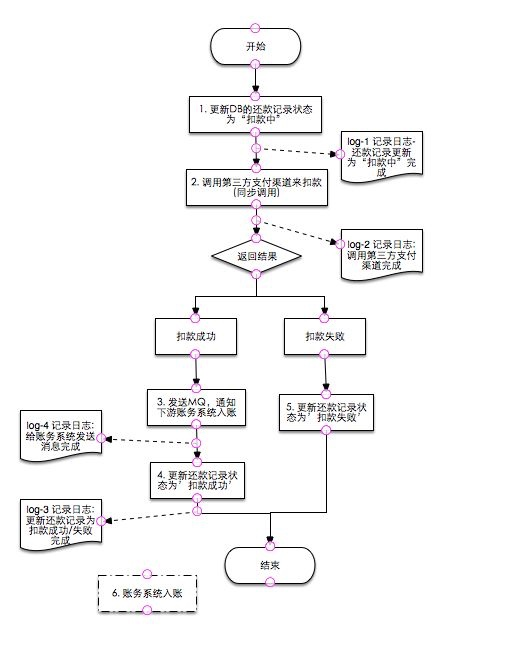
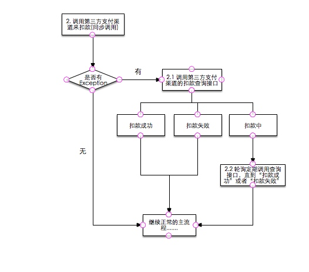
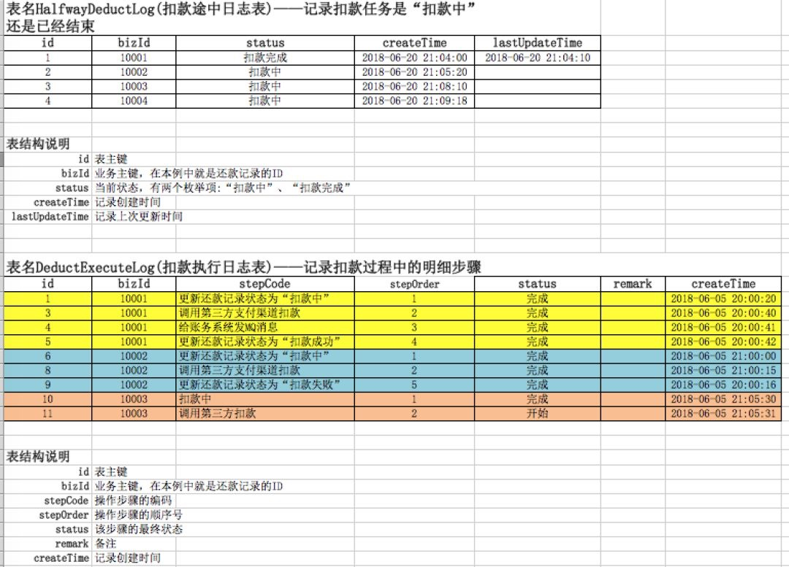
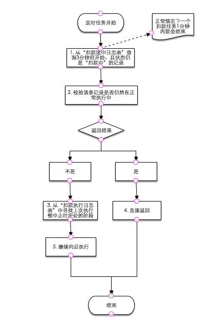
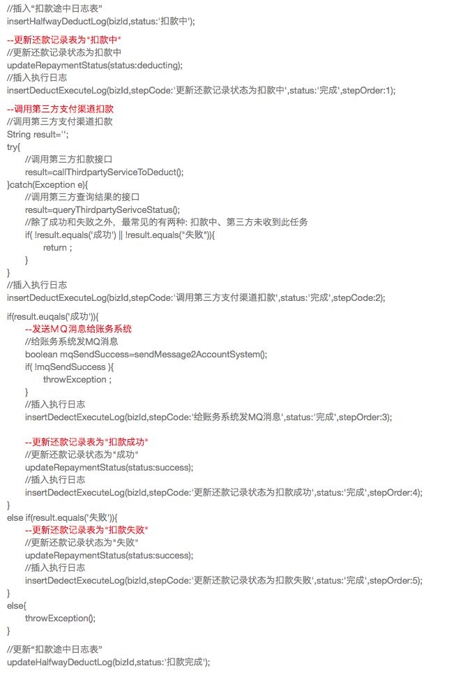
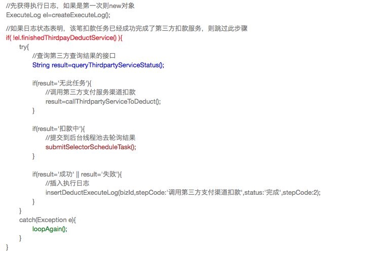
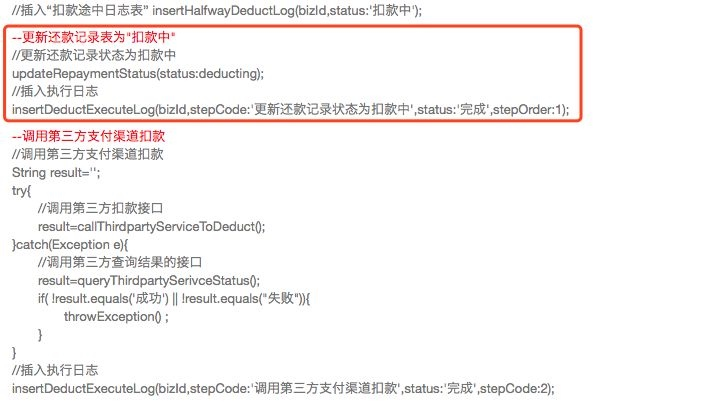
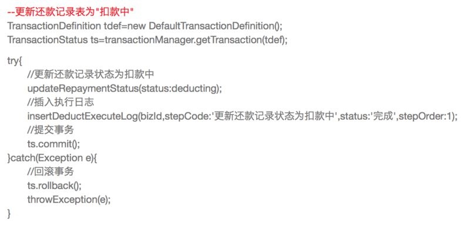

https://mp.weixin.qq.com/s/3liPJulRZu4f72pmcabCSA
“功夫贷” 是一款线上贷款 APP，主要是给信用卡优质用户提供纯线上的信用贷款，以期限长、额度高、利息低为主要优势（类似的业务模式主要有宜人贷）。
和任何一种分期贷款一样，符合资质的用户，在功夫贷成功贷款之后，需要在约定还款日还款。目前还款主要有以下这几种方式：
- 用户在 APP 上主动还款；
- 系统定时通过后台任务扣款；
- 催收人员通过内部作业系统，手动发起扣款；
真正的扣款操作（从银行卡扣款）主要是通过第三方支付来完成，比如京东支付、通联等。不同的第三方支付，支持的银行列表和限额不同，费用和稳定性也不尽相同，我们会选择出个最优通道、以及多层级备用通道，为此研发了支付路由系统，同时这些服务商的业务限制 / 出错概率还不低，所以我们又要考虑业务上的一致性，这也是本文要介绍的主题。
扣款业务是比较复杂的，包括如下几个主要步骤：
- 对业务表 (扣款任务表 / 还款计划表等) 的数据库操作
- 调用第三方支付
- 清算入账
这多个子功能需要保证同时成功或者同时失败，其中既有外部第三方调用，又有内部微服务的调用，所以这是个比较典型的分布式事务的场景。由于外部的第三方支付服务有时不稳定、且部分交易可能很长时间才能确认成功。
因此 我们没考虑两阶段提交的分布式事务，而是选择了最终一致性，而为了保证在状态不一致这个时间窗口的准确性 (比如不能在该窗口对用户重复扣款)，我们也额外多做了很多的考虑。
主流程分析
扣款服务的主流程如下图所示（在这里仅举 “第三方支付渠道是同步返回扣款结果” 作为例子，在实际情况中，各家第三方支付渠道的接口并不一致，有同步返回的、也有异步 + 轮询方式的，这两种形式，在我们这的处理逻辑上没有明显区别）。

为了避免对业务流程造成干扰，上图中把同样处于主执行路径上的、起着日志记录作用的 "log-x" 这些步骤，在各自所处的位置以虚线表示，记得它们是主流程的一部分。这些 “log-x” 步骤在实现上，是建立一张日志表，以持久化、结构化的方式来记录，并不是 logback 之类的文件日志，因为这些日志在异常时的恢复，起着重要作用。
从上图可以看出，由 1、2、3、4、6 这五个步骤，形成一个整体，我们需要保证的是，这 5 个步骤同时成功、或者同时失败。其中包含几类操作：
- 本地 DB 的 SQL 执行，包括步骤 1、4；
- 远程 HTTP/RPC 调用，包括步骤 2；
- 发送 MQ 消息，包括步骤 3；
- 异步系统执行，包括步骤 6；
其中步骤 6 是另外一个服务（账务服务），是在支付服务之外的，所以用虚线框来表示，但在逻辑上是整体不可分的一部分，需要共同成功 / 失败。下面我们来看，在这些步骤中，会有哪些失败场景和各自特点：
- 本地 DB 的 SQL 执行：SQL 错误、与 DB 网络中断或者 DB 不可用的时候，会失败，但这种失败可补偿，且概率很低；
- 远程调用：在本例中是 “同步调用第三方支付渠道扣款”，因为这是网络调用，最复杂的一种，可能会超时、也可能会连接中断或其他错误原因中断，这里的失败是有无法补偿的可能的，尤其是业务类错误——用户余额不足、用户银行卡状态不对等，都可能导致业务终止而无法继续下去；
- 发送 MQ 消息：和本地 DB 的 SQL 执行类似，是可补偿的失败，从可用性的角度来看，比 SQL 执行的失败概率略高一些，在我们实际场景中，就有发送失败的情况（我们使用的是 RocketMQ，曾经出现过几次 broker 刷盘缓慢导致流控的发送失败）；
- 异步系统执行：我们这里是触发账务系统入账，是 RPC 类（我们用的 Dubbo）操作，有一定的失败可能性（账务系统压力过大、内存溢出、磁盘占满等都可能导致其不能或部分服务器不能提供服务），但又因为它在业务上是肯定能成功的记账操作，所以即使失败，也是可以补偿的；
综合上面这些分析，考虑到步骤 2“同步调用第三方支付渠道扣款” 是唯一一种无法补偿的业务，且处于流程链最靠前的地方，所以整个业务流，我们是向着可补偿的方式，即保证最终都会成功的最终一致性的方向去做。如果步骤 2 靠后，则由于它的不可补偿性，我们就必须在前面步骤的步骤考虑回滚——或 DB 事务回滚、或二阶段回滚、或提供撤销功能，以达到最终都会失败的最终一致性。
详细设计
难题一：出现预期内的异常时，如何保证最终一致性？
我们先分析，如果主流程上的各个环节，出现了预期内的异常，我们大概要怎么处理，以保证最终一致性。预期内的异常，是指程序提前考虑到的——主要是 try/catch 中 catch 到 Exception 部分的逻辑。
步骤 1：更新 DB 的还款记录状态为 “扣款中”：其是流程第一步，如果它失败，流程结束，不需补偿；
步骤 2：同步调用第三方支付渠道来扣款：例子中的这家服务商的扣款接口，提供的是只有两种结果状态的契约：“扣款成功”或 “扣款失败”。如果在扣款中的话，则调用程序就在同步阻塞着。无论是由于调用超时、或调用中连接中断、或系统 Crash，导致失败，我们无法判定是否扣款是否成功，因此需要辅助以主动查询——轮询调用此家第三方支付服务商的查询接口，以确定扣款状态，达到“成功” 或“失败”的终态为止，如下图所示。

步骤 3：发送 MQ 通知下游账务系统入账：如果失败的话，和上一步类似，需要日志表 + 定时任务补偿。
步骤 4/5：更新 DB 的还款记录状态为 “扣款成功” 或“扣款失败”：如果更新 DB 操作出现了失败，则需要定时任务，重试补偿，这需要借助日志表来恢复，后台定时任务去扫描该日志表，以从之前失败的步骤，继续执行下去，类似于“断点续传”，这里我们暂不详述；
步骤 5：发送 MQ 通知下游账务系统入账：如果发送失败的话，和上一步类似，需要日志表 + 定时任务补偿；
步骤 6：账务系统入账：由于通常的 MQ（我们用的是 RocketMQ）本身有 at-least-once 的重试机制，这就保证了消息必须被正确消费（只要账务系统程序不会主动 ignore 掉）才会被 ack，所以这个地方的最终成功，就由消息中间件来保证了；如果使用的 MQ 组件没有这种重试机制，则需要在账务系统端建立日志表，来补偿（如果 MQ 有丢失消息的风险，那仍然可能不一致）。
难题二：出现预期外的异常，如何保证最终一致性？
顾名思义，预期外的异常就是非程序提前感知到的，比如进程被强制 KILL、机器 CRASH，在这种情况下，程序执行到一半，突然结束了，这时怎么保证最终一致性?
在这种情况下，只能是靠日志表了，主流程或任何依赖内存记录的恢复程序都无效了。
定时任务的目的是补偿未能正常结束的扣款任务。一般来说，如果扣款任务未能正常结束，可能会有如下几种原因：
系统意外退出（进程被 KILL、宕机等）；
系统重启——如当前某笔扣款记录在轮询第三方支付服务的扣款状态，此时重启也造成了流程中断；
执行过程中出错，如数据库异常、调用超时、MQ 不可用等；
为了达到补偿目标，需要设计若干张日志表来辅助。我们设计了 2 张，如图：

其一，“扣款途中日志表”是用于标识扣款任务是否仍然在途中。在扣款开始之前，往该表插入记录，扣款完成后 (成功或失败) 更新状态。该表主要目的是：可以方便地找出来，哪些扣款任务是没有正常结束的。为什么没直接用业务表 “还款记录表” 来查询在途扣款呢? 主要是从便捷性和性能上考虑——业务表的数据是不能删除的，而该日志表可以定期将已完成的扣款任务清除掉，以控制该表其数据量，保证查询效率；
其二，“扣款执行日志表” 是用于记录扣款任务的执行过程。该表的记录不更新，只插入。如果某个扣款任务需要恢复补偿，则从该表中找到上次执行的 “断点”，继续向后执行。上图中举了 3 组数据作为例子：黄色背景是一笔完成的、扣款成功的日志；浅绿色背景是一笔完成的、扣款失败的日志；浅橙色背景是一笔进行中（正在执行调用第三方扣款）的日志。
下面是定时补偿任务的主流程：

- 在实践中，一个正常的扣款任务在 1 分钟内都应该结束了，时间主要花费在调用第三方扣款服务上，绝大部分 30 秒内结束，少量的会拖的时间比较长，甚至跨日；
- 定时任务 3 分钟执行一次，每次扫描 3 分钟前开始的、且当前未结束的任务。3 分钟以内的任务不处理的原因是：它们可能仍然在自己的正常处理过程中，此时还不需要定时任务来接管；
伪代码
为了便于读者理解，这里以伪代码的形式把整个扣款过程写出来，且分几个迭代版本不断增强。
版本一

- 在执行之前，注意要把数据库事务设为自动提交，即不可把整个过程纳入到一个事务里——不仅是性能问题，更重要的是，如果过程中失败了，日志数据也被回滚掉了，无法恢复；
- 面对预期内的异常和预期外的异常，如详细设计里所述，或抛出异常结束、或 return 结束，后期由定时任务补偿。在主流程中不做各种各样繁杂的异常处理，既避免繁琐，也避免出错；
- 上面只是伪代码，在实践中应该打印出详细的 Exception 信息、以及 log 文件日志，以便于定位和查找问题；
版本一有 2 个问题
- 如果失败了，都要等定时任务补偿，那样响应有些慢，毕竟定时任务几分钟才执行一次；
- 定时任务补偿时，要判断之前执行到哪，如果补偿的起始阶段不同、代码逻辑也不一样，这也比较麻烦；
基于此，有了版本 II，这里取 “调用第三方支付渠道扣款” 的片段来说明。

- 红色部分增加了日志状态的判断。如果是补偿性的，如该步骤以前已经成功了，则跳过这段调用第三方的逻辑；
- 蓝色部分增加了先查询的操作，不论是否已经调用过扣款；
- 褐色部分增加了后台线程池轮询，而不是单单等定时任务去触发；这地方实践中稍微控制下线程池数量、且最好有多路复用的模式，防止很多线程都挂在那轮询；
- 绿色部分，其实是出现异常的话，上面这些步骤可以再来一遍；
不难看出，该版本主要是增加各个逻辑段的幂等性，既使其能安全执行、又使代码逻辑简洁。
版本二还可以更为严谨一点——拿下面这个代码段红框里的来说，如果在两段 SQL 之间失败了，有造成不一致的可能（概率很小）。

版本三

通过事务保证逻辑段能同时成功或同时失败。虽然概率很小，但如果线上发生了，很难找到原因。
上面这些伪码是本人用 markdown 纯粹手敲的，并不是生产代码，没有经过严格测试，所以如果有些地方写的笔误或逻辑有漏洞，请读者谅解。
通过上面分析，我们看到有多个地方可能会对同一笔还款记录扣款，包括：
- 正常执行扣款；
- 提交到后台线程池的重试 / 轮询；
- 定时任务补偿；
- 人工执行扣款
所以针对单笔还款记录的扣款操作，我们需要使用锁定，实践中我们采用的是 redission 来做的分布式锁，这比较简单，这里不多叙述，不忽略这一点就好。
兜底方案
上面我们分析了很多，对主流程中的分支都做了很多的考虑，但仍然有这两个风险：
- 有些异常分支没有考虑到；
- 随着业务的发展，新加进来的逻辑，或者新人进来，很可能有些新的分支点没有被充分考虑；
所以从严谨的角度，我们需要个兜底方案——主动检查 + 对账，以主动识别任何异常现象。从实践上看，由于业务的复杂性以及持续变化，可能很难完全梳理清楚所有的异常点，因此 “主动检查 + 对账” 可能更为重要。
主动检查
我们创建了个 Thread，定时查询还款计划表中，处于”扣款中 “的异常数据，进行检查，如果有问题，自动修正或者通知出来人工干预。比如某条还款记录，从“还款中” 的状态到现在，已经过去了 1 个小时了，这种情况就会被判定为可疑现象，需要人工介入。
对账
仍然有一些情况，是系统所覆盖不到的，需要双方对账 (我们和第三方支付对账、第三方支付和银行对账)。主要有以下这些场景：
- 跨日——双方把订单归到不同日期。比如 23:59 的订单，我们归到今天，第三方支付那边可能归到第二天；
- 第三方支付开始告诉我们是成功的，我们已经结束操作了，后来对账时，第三方支付说支付失败了（可能它的信息是来自于银行）；
- 我这边还款 1 笔，第三方支付那边搞成了 2 笔（可能是它们自己的原因，也可能是银行的原因）；
对账主要是根据 “订单号”、“状态”、“日期”，主要是看状态和日期，是否对的。金额之类的，一般是不核对的，因为它不会出错。
兜底方案虽然好，但往往需要人工介入，成本高、反馈慢，如果能够系统自动就识别并修正，保证系统一致，那么在用户体验和成本角度考虑，都是很合适的。所以兜底方案和系统一致性是相互补充、各自取长补短的事情。
总结
上面以我们的支付服务，作为一个最终一致性的例子。虽然场景不是很复杂，但写的比较细致，需要考虑的点也还是不少，希望能帮助到读者，将来在处理类似问题时，能够有比较清晰的思路。
作者介绍
作者张轲目前任职于杭州大树网络技术有限公司，担任首席架构师，负责系统整体业务架构以及基础架构，熟悉微服务、分布式设计、中间件领域，对运维、测试、敏捷开发等相关领域也有所涉猎，个人微信公众号：zhangke83。